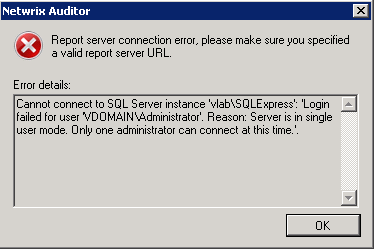
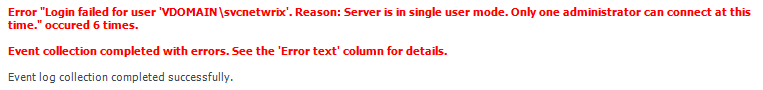
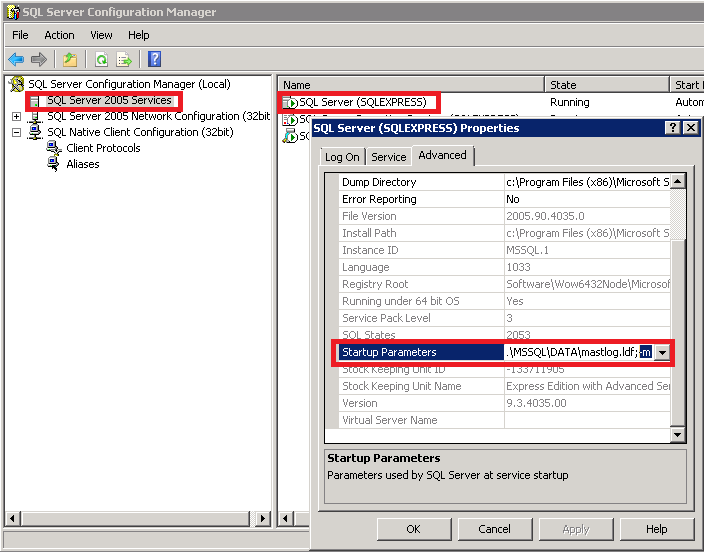

- I am getting the following error when trying to configure database settings:
Cannot connect to SQL Server instance '<serverinstance>':'Login failed for user
'<domainuser>'. Reason: Server is in single user mode. Only one administrator can
connect at this time.'.

- I am getting the following error in the summary daily reports:
Error "Login failed for user '<domainuser>'. Reason: Server is in single user
mode. Only one administrator can connect at this time." occured <N> times.

Your SQL Instance is running in Single-User mode. This makes Netwrix Auditor unable to connect to SQL server.
Please perform the following steps to resolve your issue:
- Launch SQL Server Configuration Manager and click on SQL Server (2008/2012) Services.
- In the right pane, right click on the desired SQL Server instance and select Properties.
- On the Advanced tab, make sure that "Startup Parameters" does not contain the following parameter '-m;'. If the parameter is there, remove it.

- Restart the SQL Server Instance service.